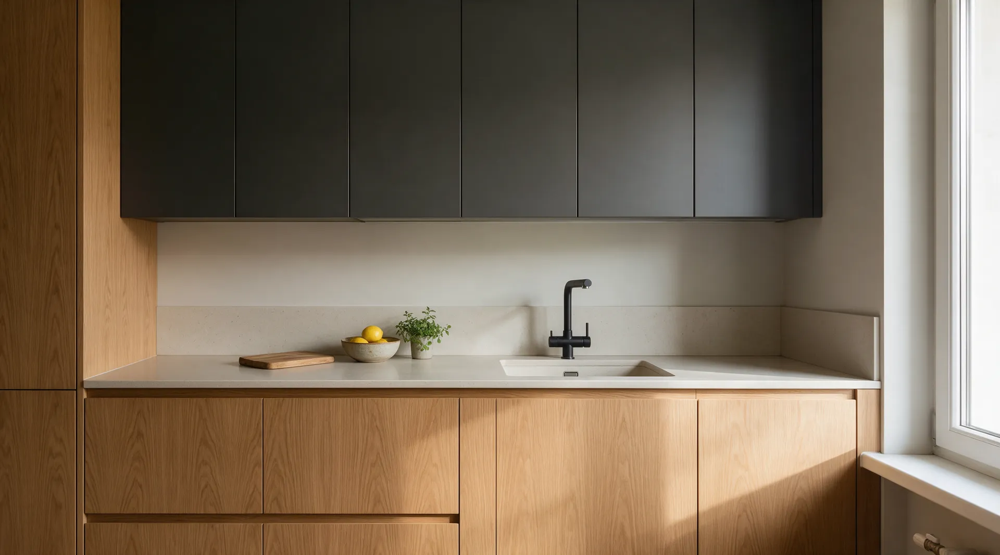
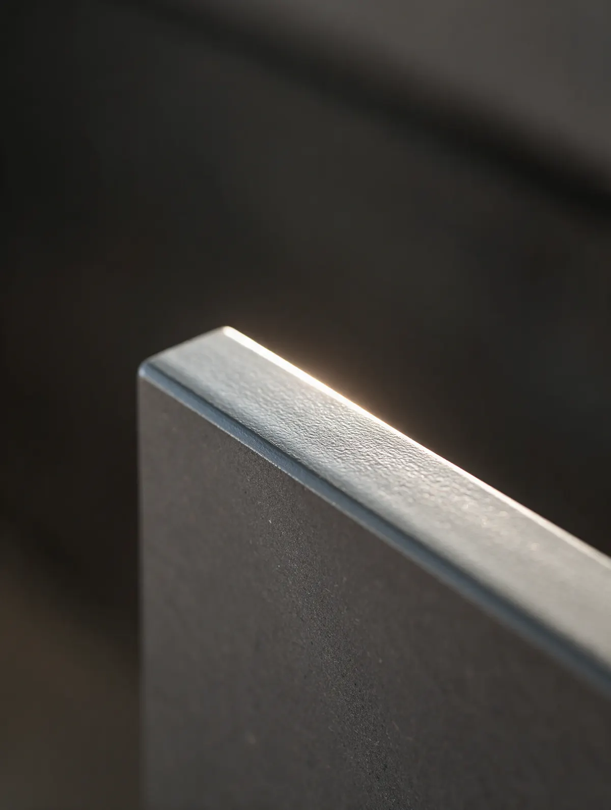
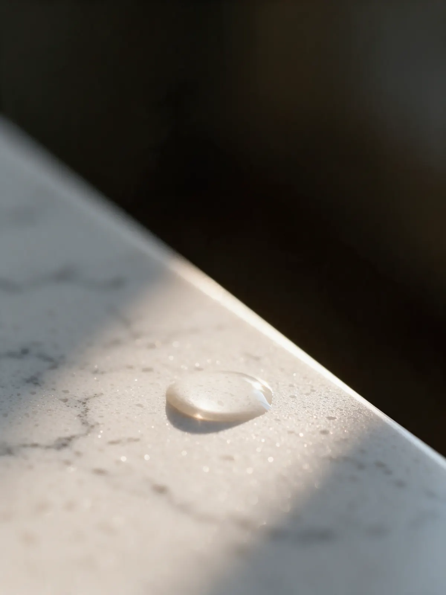
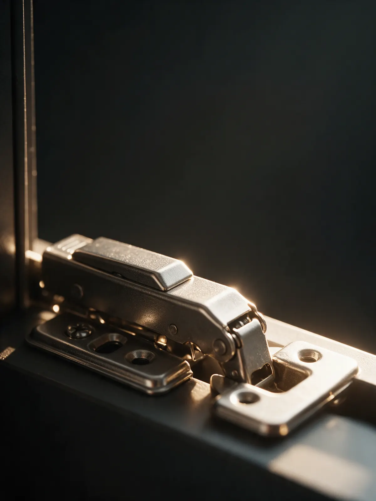

Кухни на заказ в Казани – цена до замера
Присылаете размеры, за день даём предварительный расчёт. Фасады привозим на замер и показываем вживую, срок изготовления пишем в договоре.
Одна кухня. Четыре фасада.
Матовый графит
Фасад: МДФ в эмали, матовый. Столешница: кварц. Без ручек, открывание от нажатия.
Как на фото: от 38 000 ₽ за погонный метрТёплый белый
Фасад: МДФ в суперматовой эмали, не бликует и не собирает отпечатки. Столешница: кварц.
Как на фото: от 36 000 ₽ за погонный метрДуб натуральный
Фасад: шпон дуба на МДФ, масло-воск, рисунок дерева настоящий. Столешница: кварц.
Как на фото: от 52 000 ₽ за погонный метрГлубокий зелёный
Фасад: МДФ в эмали, цвет по каталогу RAL, матовый. Столешница: кварц.
Как на фото: от 40 000 ₽ за погонный метрСколько стоит
Точную смету считаем после замера, а прицениться можно сейчас. В цену входят корпус, фасады, столешница, фурнитура с доводчиками и монтаж. Техника и мойка отдельно.
-
Кухня прямая 3 м, как на фото
Фасады МДФ в эмали, столешница кварц, доводчики на всех дверцах и ящиках. Дуб в шпоне и угловые кухни считаем по размерам.
от 110 000 до 160 000 ₽за кухню целиком -
Шкаф распашной или купе
До потолка, с подсветкой и наполнением под ваши вещи. Фасады те же, что у кухонь: эмаль, шпон, зеркало.
от 28 000 ₽за погонный метр -
Гардеробная
Открытая система или комната со своей дверью. Считаем по плану помещения за день.
от 60 000 ₽за проект
Предоплата 30 % при подписании договора, цена в договоре не меняется. Расчёт до замера предварительный: точную смету даём после замера вместе с 3D-проектом.
Из чего сделано
Три вещи, которые определяют, как кухня выглядит через пять лет: фасады, столешница и фурнитура. Образцы всего этого привозим на замер.
Фасады: МДФ в эмали или шпон
Эмаль красим в любой цвет по каталогам RAL и NCS, матовую или глянцевую. Шпон дуба и ясеня под маслом или лаком: рисунок дерева настоящий, а не плёнка.
Столешницы: кварц или HPL
Кварцевый агломерат не боится ножа и горячей кастрюли, стык шлифуем на месте до невидимого. HPL-пластик дешевле, декоров больше.
Фурнитура с доводчиками, гарантия 24 месяца
Петли и направляющие с доводчиками: дверцы и ящики закрываются мягко и без стука. Если что-то заскрипело или отвалилось в первые два года, меняем бесплатно.



Что мы знаем после сотен кухонь
Многому нас научили чужие промахи. Приезжаешь на замер, а в старой кухне столешница состыкована посреди фартука, а цоколь под духовкой глухой, как сейф. Мы на этом собаку съели: шесть промахов ниже знаем в лицо и у себя не допускаем.
Столешница стыкуется на виду
Неопытный сборщик режет там, где удобно пилить, и шов оказывается посреди фартука. Мы уводим стык под мойку или в угол, а кварц шлифуем на месте, пока шов не перестанет читаться.
Фасады не отрегулированы, зазоры гуляют
Навесил дверцы и уехал: через месяц одна щель три миллиметра, другая семь. Мы выставляем каждый фасад по трём осям уже после того, как кухня встала на место, и проверяем зазоры по всей линии.
Замер на глаз, а потом «подпилим на месте»
Стены в новостройках кривые, трубы торчат не по плану. Если замер этого не учёл, кухню подгоняют ножовкой у вас на глазах. Мы снимаем дальномером стены, углы, выводы воды и вентиляции и закладываем всё это в проект.
Цоколь глухой, духовке и посудомойке нечем дышать
Технике нужен воздух: без вентиляции духовка греет соседние фасады, а посудомойка копит влагу в корпусе. Ставим вентиляционные решётки и оставляем зазоры там, где стоит техника, а не там, где красивее.
Вытяжка не по оси плиты, розетки не там
Вытяжка сдвинута на полшкафа, а посудомойка живёт на удлинителе. Мы на замере расписываем, где встанет каждая техника, и отдаём схему розеток: если стены ещё открыты, электрик успеет, если нет, прячем провод в цоколь и шкаф, а не поверх фартука.
Подсветка проводом наружу
Лента приклеена к дну шкафа, блок питания болтается на фартуке. Мы фрезеруем профиль в дно верхних шкафов, блок прячем внутрь модуля, выключатель ставим туда, куда тянется рука, когда заходишь на кухню.
Хорошая кухня служит 10–15 лет. Нам этого мало: она должна каждый день радовать глаз, а ваш вкус – новыми блюдами. Иначе зачем всё это.
Как заказать
Пять шагов от первого сообщения до собранной кухни. Ориентир по цене в день обращения, точная смета после замера, дата монтажа в договоре.
- 1
Размеры и предварительный расчёт
Присылаете план из ЖК, фото стены с рулеткой или просто длину и высоту. За день отвечаем предварительным расчётом и вариантами фасадов.
- 2
Замер
Приезжаем с лазерным дальномером и образцами фасадов. Снимаем стены, окна, выводы воды, вентиляции и розеток.
- 3
Проект в 3D и точная смета
После замера показываем проект с вашими фасадами и точную смету по нему. Меняем, пока не понравится.
- 4
Договор с датой
В договоре срок изготовления и дата монтажа. Предоплата 30 % фиксирует цену: смета после подписания не растёт.
- 5
Изготовление и монтаж
Режем, кромим и красим на своём производстве, каждый фасад сверяем с образцом, который вы держали в руках. Собираем, подключаем мойку и технику, упаковку и пыль увозим с собой.
Пришлите размеры, за день дадим расчёт
Фото стены с рулеткой, план из ЖК или просто длина и высота. Ответим предварительным расчётом, а точную смету дадим после замера.
Ответим в течение рабочего дня. Шкафы и гардеробные считаем так же.